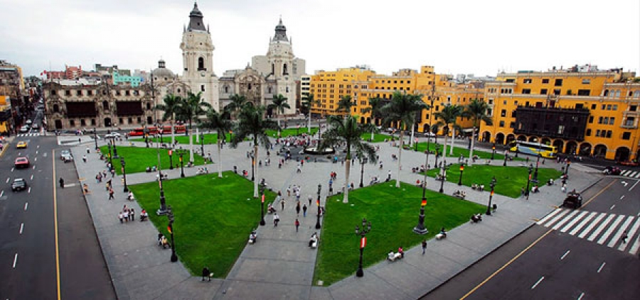

|  | |||||
| Inicio | Gastronomia | Restaurantes | Discotecas | Museos | Iglesias |
Restaurantes1. La Rosa Naútica, Miraflores. Es uno de los más reconocidos restaurantes de Lima. Situado en Espigón 4, Circuito de Playas (Miraflores) ofrece una experiencia única por su exclusiva vista a la bahía.
|
|||||
2. Acantilado de Barranco. Se trata de uno de los locales más románticos de Barranco. Su vista al mar y su acogedor ambiente son sus mayores atractivos. Está ubicado en la calle La Ermita 102, cerca al Puente de los Suspiros. Entre sus platos imperdibles destacan las brochetas de pulpa de cangrejo, pollo con champiñones y anticuchos de corazón. El horario de atención va de 5 p.m. a 1 a.m. de lunes a jueves, y los fines de semana hasta las 3 a.m. |
|||||
3. El Salto del Fraile, Chorrillos. Ubicado al borde de un acantilado en el distrito de Chorrillos, destaca por su inmejorable vista al Océano Pacífico. No te puedes perder el show que s eofrece frente al restaurante. Cada media hora un hombre vestido de fraile realiza el salto que le da nombre al local. Este tiene lugar de lunes a domingo desde la 1 p.m hasta las 5 p.m |
|||||